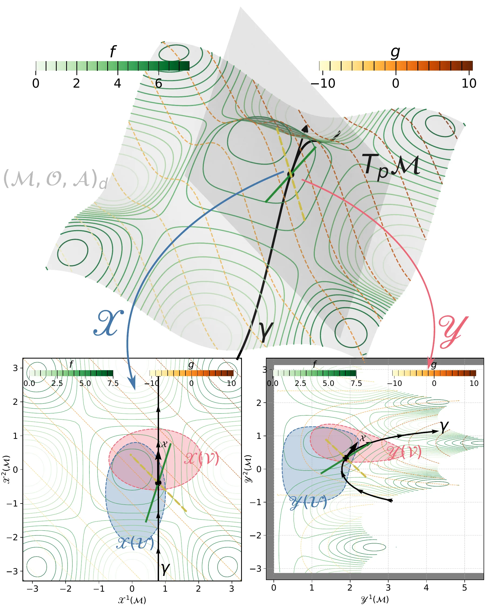

4.2 Cotangent Space \(T_p^*\mathcal{M}\)
Chapter 4 • Tangent Spaces
4.2 Cotangent Space \(T_p^*\mathcal{M}\)
The cotangent (\(\mathbb{R}\)-vector) space \(\left(T_p^* \mathcal{M}, \oplus_{T}^*, \odot_{T}^* \right)\) of the manifold \(\left(\mathcal{M}, \mathcal{O}, \mathcal{A}\right)_d\) at a point \(p \in \mathcal{M}\) is the dual (\(\mathbb{R}\)-)vector space of the tangent (\(\mathbb{R}\)-vector) space \(T_p\mathcal{M}\), this is, the set of all linear maps from \(T_p\mathcal{M}\) to \(\mathbb{R}\): \(T_p^*\mathcal{M} := \mathrm{Hom}_{\mathbb{R}}(T_p\mathcal{M}, \mathbb{R})\). Each element \(\mathsf{X}_p \in T_p^*\mathcal{M}\) is called a covector (or cotangent vector) at the point \(p\).
Covectors are canonically produced as the differentials (or gradients) of smooth scalar fields6. Given a function \(f \in C^\infty(\mathcal{M})\), its differential at \(p\) is the covector \begin{align*} (df)_p : T_p \mathcal{M} &\xlongrightarrow{\;\;\sim\;\;} \mathbb{R} \\ v_{\gamma, p} &\longmapsto (df)_p (v_{\gamma, p}) := v_{\gamma, p}(f), \end{align*} which evaluates the directional derivative of \(f\) along \(v_{\gamma, p}\) at the point \(p\).
This construction is not a special case but an exhaustive one: every element of \(T_p^*\mathcal{M}\) is the differential at \(p\) of some \(f \in C^\infty(\mathcal{M})\)7. Locally, this is made explicit in Subsection 4.2.1, where the differentials \((d\mathscr{X}^i)_p\) of the coordinate maps are shown to form a basis of \(T_p^*\mathcal{M}\).
4.2.1 Basis and Coordinate Components for \(T^*_p \mathcal{M}\)
Given a chart \((\mathcal{U}, \mathscr{X})\) around a point \(p \in \mathcal{M}\), the set of differentials \begin{align*} \epsilon \coloneqq \left\lbrace (d\mathscr{X}^1)_p, \dots, (d\mathscr{X}^d)_p \right\rbrace, \end{align*} constitutes the dual chart-induced basis8 for \(T_p^*\mathcal{M}\). This means that any covector \(\mathsf{X}_p \in T_p^*\mathcal{M}\) at \(p\) can be written as: \begin{align*} \mathsf{X}_p = \sum_{i=1}^d \mathtt{x}_i^p (d\mathscr{X}^i)_p, \end{align*} Therefore, at the level of a point, the cotangent space is completely and rigorously characterized as the dual of the tangent space, with gradients of scalar fields providing a natural generating set.
Note that, employing the dual chart-induced basis we can recover single components of \(v_{\gamma, p}\): \begin{align*} (d\mathscr{X}^{i})_p (v_{\gamma, p}) = (\mathscr{X}^{i} \circ \gamma)'(\lambda_0) = (\mathscr{X} \circ \gamma)_j'(\lambda_0) \cdot \underbrace{\partial_j \left[\mathscr{X}^{i} \circ \mathscr{X}^{-1}\right] (\mathscr{X}(p))}_{\delta^i_j} = (\mathscr{X} \circ \gamma)_i'(\lambda_0) = \dot{\gamma}^i_\mathcal{U}(\lambda_0). \end{align*}
Given a chart \((\mathcal{U}, \mathscr{X})\) with \(p \in \mathcal{U}\), we can extract the components, \(\mathtt{x}_i^p\), of the covector \(\left(df\right)_p\) as: \begin{align*} &\sum_{j=1}^d \mathtt{x}_j^p (d\mathscr{X}^j)_p \left( \left( \frac{\partial}{\partial \mathscr{X}^i} \right)_{p} \right) = \left(df\right)_p \left( \left( \frac{\partial}{\partial \mathscr{X}^i} \right)_{p} \right) \longrightarrow \dots\\ \sum_{j=1}^{d} \mathtt{x}_j^p &\cdot \underbrace{\partial_i \left[\mathscr{X}^j \circ \mathscr{X}^{-1}\right] (\mathscr{X}(p))}_{\delta^j_i} = \left( \frac{\partial}{\partial \mathscr{X}^i} \right)_{p} (f) \longrightarrow \mathtt{x}_i^p = \partial_i \left[f \circ \mathscr{X}^{-1}\right] (\mathscr{X}(p)) \in \mathbb{R}. \end{align*}
Given two charts \(\left( \mathcal{U}, \mathscr{X} \right)\) and \(\left( \mathcal{V}, \mathscr{Y} \right)\), the basis covectors induced by \(\mathscr{X}\) and \(\mathscr{Y}\) at the point \(p\) are related as follows. Let us compute the action of the covector \((d\mathscr{X}^i)_p\) on an arbitrary tangent vector \(v_{\gamma, p} \in T_p\mathcal{M}\): \begin{align*} (d\mathscr{X}^{i})_p (v_{\gamma, p}) &\coloneqq v_{\gamma, p}(\mathscr{X}^{i}) = (\mathscr{X}^{i} \circ \gamma)'(\lambda_0)= \big( \underbrace{ \mathscr{X}^i \circ \mathscr{Y}^{-1} }_{\mathbb{R} \longleftarrow \mathbb{R}^d} \circ \underbrace{ \mathscr{Y} \circ \gamma }_{\mathbb{R}^d \longleftarrow \mathbb{R}} \big)' (\lambda_0)\\ &= \sum_{j=1}^{d} \left\lbrace \underbrace{(\mathscr{Y} \circ \gamma)_j'(\lambda_0)}_{v_{\gamma, p}(\mathscr{Y}^j)} \cdot \partial_j \left[ \mathscr{X}^{i} \circ \mathscr{Y}^{-1} \right] (\mathscr{Y}(p)) \right\rbrace\\ &= \sum_{j=1}^{d} \left\lbrace (d\mathscr{Y}^{j})_p (v_{\gamma, p}) \cdot \left( \frac{\partial \mathscr{X}^i}{\partial \mathscr{Y}^j} \right)_{p} \right\rbrace. \end{align*}
Since this holds for any tangent vector \(v_{\gamma, p} \in T_p\mathcal{M}\), we conclude the transformation law for the dual basis: \begin{align*} (d\mathscr{X}^{i})_p = \sum_{j=1}^{d} \left\lbrace \left( \frac{\partial \mathscr{X}^i}{\partial \mathscr{Y}^j} \right)_{p} \cdot (d\mathscr{Y}^{j})_p \right\rbrace = \sum_{j=1}^{d} \left( \textrm{\runic ᛞ}_{\mathcal{U}\mathcal{V}} \right)^i_{j} \left( \mathscr{Y}(p) \right) \cdot (d\mathscr{Y}^{j})_p. \end{align*}
In Section 4.1.1, we defined that contravariant objects transform exactly like this, hence, the dual chart-induced basis elements are contravariant, in contrast to tangent basis vectors which transform covariantly.
Correspondingly, the covector components transform as follows between two intersecting chart domains \(\mathcal{U}\) and \(\mathcal{V}\) containing a point \(p \in \mathcal{U} \cap \mathcal{V}\). Given a covector \(\mathsf{X}_p \in T_p^*\mathcal{M}\) expressed in the chart-induced bases of \(\left( \mathcal{U}, \mathscr{X} \right)\) and \(\left( \mathcal{V}, \mathscr{Y} \right)\), we have: \begin{align*} \mathsf{X}_p &= \sum_{i=1}^{d} \mathtt{x}_i^p \cdot (d\mathscr{X}^i)_p = \sum_{i=1}^{d} \mathtt{y}_i^p \cdot (d\mathscr{Y}^i)_p. \end{align*}
Substituting the basis change derived previously into the left-hand expression for \(\mathsf{X}_p\), we get: \begin{align*} \sum_{i=1}^{d} \mathtt{x}_i^p \cdot \sum_{j=1}^{d} \left( \frac{\partial \mathscr{X}^i}{\partial \mathscr{Y}^j} \right)_{p} \cdot (d\mathscr{Y}^j)_p = \sum_{i=1}^{d} \mathtt{y}_i^p \cdot (d\mathscr{Y}^i)_p. \end{align*}
Since the basis covectors \((d\mathscr{Y}^j)_p\) are linearly independent, we can equate the components on both sides to obtain the transformation law for the covector components: \begin{align*} \mathtt{y}_j^p = \sum_{i=1}^{d} \left( \frac{\partial \mathscr{X}^i}{\partial \mathscr{Y}^j} \right)_{p} \cdot \mathtt{x}_i^p = \sum_{i=1}^{d} \left( \textrm{\runic ᛞ}_{\mathcal{U}\mathcal{V}} \right)^i_{j}\left( \mathscr{Y}(p) \right) \cdot \mathtt{x}_i^p. \end{align*}
In Section 4.1.1, we defined that covariant objects transform exactly like this. Hence, covector components are covariant, in contrast to vector components, which transform contravariantly.

4.2.2 Notation
As we did for the tangent space in Subsection 4.1.2, we now introduce a simplified notation for the cotangent space \(T_p^*\mathcal{M}\), which will streamline expressions involving basis elements and components. While the underlying geometric structures remain unchanged, this notation mirrors the choices adopted earlier for the tangent space.
Applying the Einstein summation convention (see Subsection 4.1.2) to express how a covector in the cotangent space \(\mathsf{X}_p \in T_p^*\mathcal{M}\) can be expanded in terms of the dual chart-induced bases associated with two charts \(\left( \mathcal{U}, \mathscr{X} \right)\) and \(\left( \mathcal{V}, \mathscr{Y} \right)\), both containing the point \(p \in \mathcal{M}\): \begin{align*} \mathsf{X}_p = \mathtt{x}_i^p \cdot (d\mathscr{X}^i)_p = \mathtt{y}_i^p \cdot (d\mathscr{Y}^i)_p. \end{align*} This representation reflects the fact that the covector \(\mathsf{X}_p \in T_p^*\mathcal{M}\) is an intrinsic geometric object, while its representation in terms of components and basis covectors depends on the particular chart employed.
Now suppose we have another covector \(\mathsf{Y}_p \in T_p^*\mathcal{M}\). It can be expanded similarly in the basis induced by either chart: \begin{align*} \mathsf{Y}_p = \tilde{\mathtt{x}}_i^p \cdot (d\mathscr{X}^i)_p = \tilde{\mathtt{y}}_i^p \cdot (d\mathscr{Y}^i)_p. \end{align*}
For covectors, the only new shorthand concerns the basis covectors, \[ (dx^i)_p \coloneqq (d\mathscr{X}^i)_p, \qquad (dy^i)_p \coloneqq (d\mathscr{Y}^i)_p, \] while the covectors \(\mathsf{X}_p\), \(\mathsf{Y}_p\) and their components \(\mathtt{x}_i^p\), \(\mathtt{y}_i^p\), \(\tilde{\mathtt{x}}_i^p\), \(\tilde{\mathtt{y}}_i^p\) keep the names already introduced. Hence, the expansions of the two covectors become: \[ \mathsf{X}_p = \underbrace{ \mathtt{x}_i^p \cdot (dx^i)_p }_{\text{in chart } \mathscr{X}} = \underbrace{ \mathtt{y}_i^p \cdot (dy^i)_p }_{\text{in chart } \mathscr{Y}}, \qquad \mathsf{Y}_p = \underbrace{ \tilde{\mathtt{x}}_i^p \cdot (dx^i)_p }_{\text{in chart } \mathscr{X}} = \underbrace{ \tilde{\mathtt{y}}_i^p \cdot (dy^i)_p }_{\text{in chart } \mathscr{Y}}, \]
and the transformation law for the basis covectors, derived in the previous section, reads: \[ (dx^i)_p = \left( \frac{\partial \mathscr{X}^i}{\partial \mathscr{Y}^j} \right)_{p} \cdot (dy^j)_p = \left( \textrm{\runic ᛞ}_{\mathcal{U}\mathcal{V}} \right)^i_{j}\left( \mathscr{Y}(p) \right) \cdot (dy^j)_p. \]
Similarly, the transformation law for the components of a covector is: \[ \mathtt{y}_i^p = \left( \frac{\partial \mathscr{X}^j}{\partial \mathscr{Y}^i} \right)_{p} \cdot \mathtt{x}_j^p = \left( \textrm{\runic ᛞ}_{\mathcal{U}\mathcal{V}} \right)^j_{i}\left( \mathscr{Y}(p) \right) \cdot \mathtt{x}_j^p, \]
The same relation holds for the components \(\tilde{\mathtt{x}}_i^p\) and \(\tilde{\mathtt{y}}_i^p\) of the covector \(\mathsf{Y}_p\), since the transformation depends exclusively on the basis change induced by the transition between charts.
Employing this notation, the correspondence between the transformation behavior of covector basis elements (contravariant) and covector components (covariant) becomes immediately apparent depending on the index position (superscript or subscript).
To conclude, the notational conventions introduced for both the tangent space \(T_p\mathcal{M}\) and the cotangent space \(T_p^*\mathcal{M}\) are summarized in the notation cards at the bottom of the roadmap in Figure 1.3 (Section 1.1). (Subsections 4.1.2, and 4.2.2 respectively). It is crucial to remember that different symbols, while visually similar, represent fundamentally different mathematical objects despite their similar appearance. This table serves as a concise reference, provided the reader remains mindful that all components and bases are chart-dependent representations of intrinsically coordinate-free geometric objects.
Proof that differentials are linear maps: Consider any two velocity vectors \(v_{\gamma_1, p}, v_{\gamma_2, p} \in T_p\mathcal{M}\) and any scalar \(\alpha \in \mathbb{R}\). Using the definition of vector space operations in \(T_p\mathcal{M}\) (see Section 4.1), the linearity of \((df)_p\) amounts to verifying that it is linear over the sum and scalar multiplication; we check both conditions at the same time below: \begin{align*} (df)_p \left( \alpha \odot_T v_{\gamma_1, p} \oplus_T v_{\gamma_2, p} \right) &= \left( \alpha \odot_T v_{\gamma_1, p} \oplus_T v_{\gamma_2, p} \right)(f) \\ &= \alpha \cdot v_{\gamma_1, p}(f) + v_{\gamma_2, p}(f) \\ &= \alpha \cdot (df)_p (v_{\gamma_1, p}) + (df)_p (v_{\gamma_2, p}) \quad \square \end{align*}
Proof: Let \(\mathsf{X}_p \in T_p^*\mathcal{M}\) and let \((\mathcal{U}, \mathscr{X})\) be a chart around \(p\). By Subsection 4.2.1, \(\mathsf{X}_p = \sum_{i} \mathtt{x}_i^p (d\mathscr{X}^i)_p\) for some \(\mathtt{x}_i^p \in \mathbb{R}\). The obvious candidate, \(\sum_{i} \mathtt{x}_i^p \mathscr{X}^i\), is only defined on \(\mathcal{U}\), so we extend it to \(\mathcal{M}\) with a bump function: a \(\psi \in C^\infty(\mathcal{M})\) with \(\psi = 1\) on an open neighbourhood \(\mathcal{W} \subseteq \mathcal{U}\) of \(p\), and \(\psi = 0\) outside a compact set \(\mathcal{K} \subset \mathcal{U}\). Such a \(\psi\) is built by pulling back a bump function on \(\mathbb{R}^d\) through \(\mathscr{X}\) and extending it by zero; the extension is smooth because \(\mathcal{K}\), being compact in a Hausdorff space, is closed, so that \(\mathcal{U}\) and \(\mathcal{M} \setminus \mathcal{K}\) are two open sets covering \(\mathcal{M}\), on each of which the function is smooth. Define \(f \coloneqq \psi \cdot \sum_{i} \mathtt{x}_i^p \big( \mathscr{X}^i - \mathscr{X}^i(p) \big)\) on \(\mathcal{U}\) and \(f \coloneqq 0\) on \(\mathcal{M} \setminus \mathcal{U}\); by the same argument, \(f \in C^\infty(\mathcal{M})\). For any curve \(\gamma\) with \(\gamma(\lambda_0) = p\), continuity gives \(\gamma(\lambda) \in \mathcal{W}\) for \(\lambda\) close to \(\lambda_0\), where \(f = \sum_{i} \mathtt{x}_i^p \big( \mathscr{X}^i - \mathscr{X}^i(p) \big)\). Since \((f \circ \gamma)'(\lambda_0)\) only depends on \(f \circ \gamma\) near \(\lambda_0\), \[ (df)_p(v_{\gamma, p}) = (f \circ \gamma)'(\lambda_0) = \sum_{i} \mathtt{x}_i^p \, (\mathscr{X}^i \circ \gamma)'(\lambda_0) = \sum_{i} \mathtt{x}_i^p \, (d\mathscr{X}^i)_p(v_{\gamma, p}) = \mathsf{X}_p(v_{\gamma, p}), \] hence \((df)_p = \mathsf{X}_p\). \(\square\) The argument requires \(\mathcal{M}\) to be Hausdorff, an assumption made explicit in the definition of a topological manifold in Chapter 3.